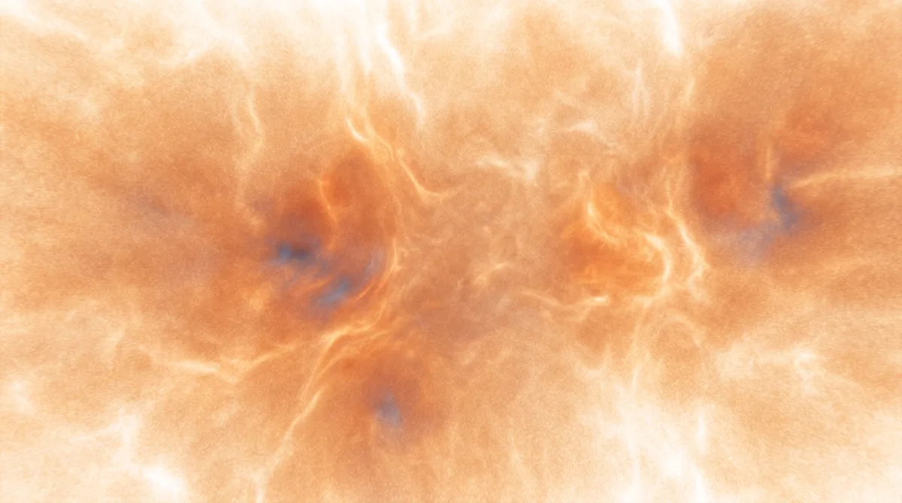
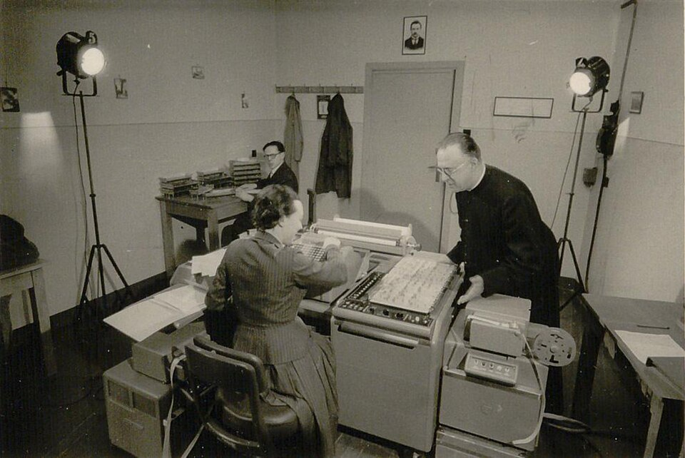
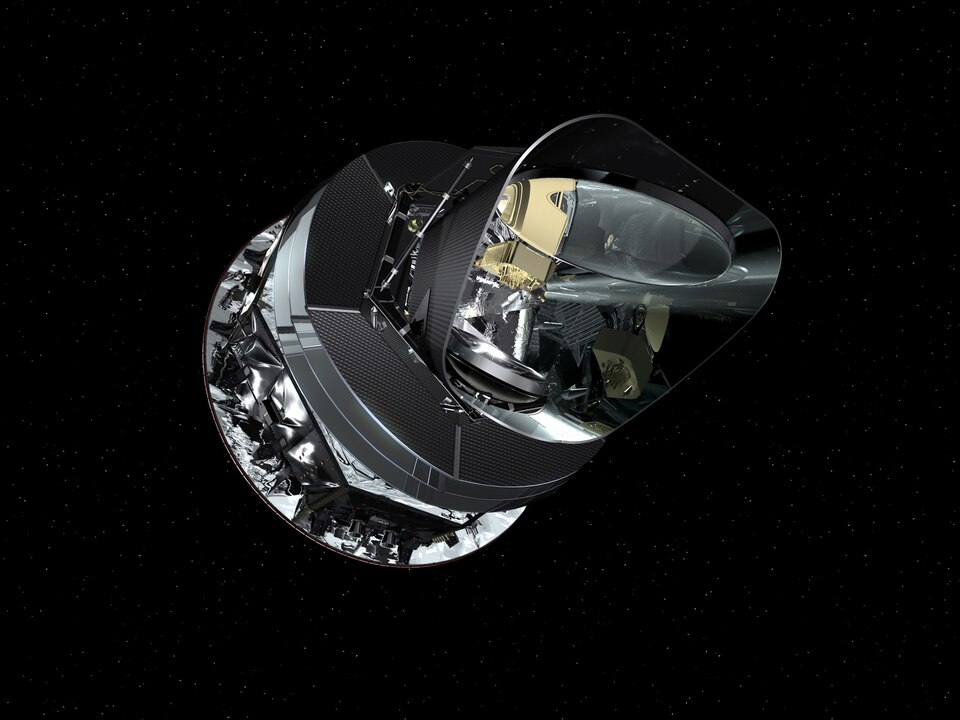
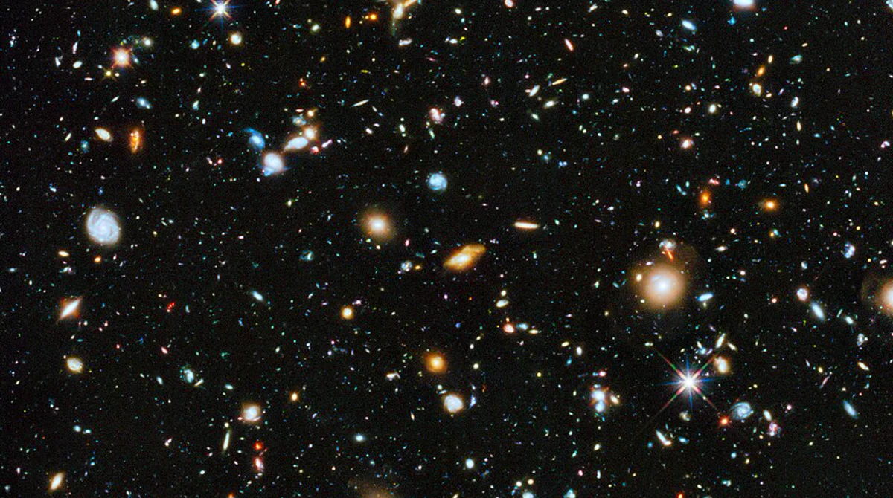
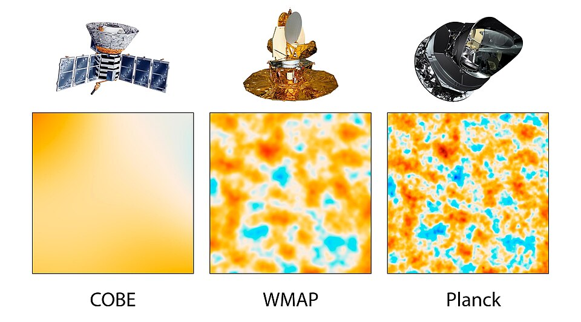
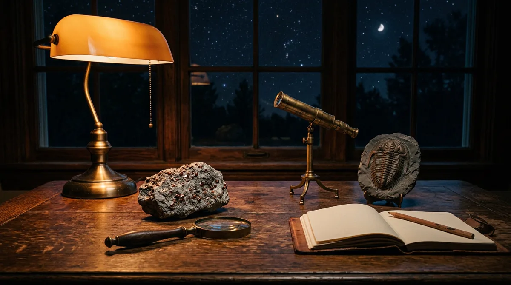
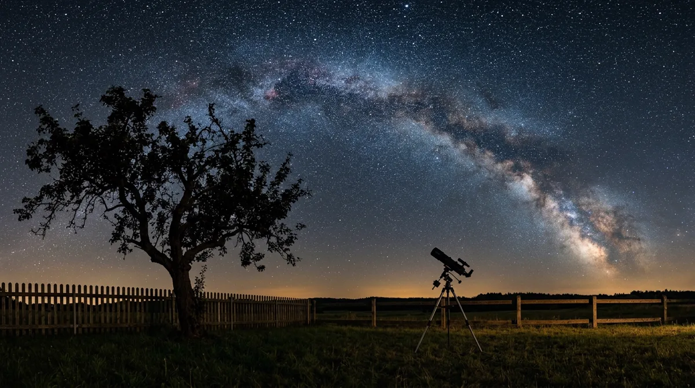

O primeiro instante e o que ninguém sabe
A primeira marca da régua do ano cósmico: 1º de janeiro, meia-noite, 13,797 bilhões de anos atrás. O que ela é, o que não foi, como se sabe a data, e o que ninguém sabe sobre o antes.
O piloto contou o ano inteiro. Daqui em diante a série desce em cada marco.

O que se data, e quem


Não foi uma explosão num ponto
"Big Bang" é um nome enganoso para o universo em expansão que a gente vê. Aconteceu em todo lugar ao mesmo tempo, foi um processo no tempo, e o universo não tem centro.
As duas coisas são luz chegando. É a regra da série: a data vem da luz.

A régua do ano cósmico
Como se sabe a idade
A idade não foi medida direto: é derivada. Seis parâmetros ajustados ao mapa do fundo cósmico de micro-ondas, e a idade sai como consequência. As agências arredondam para 13,8.

O que ninguém sabe
A inflação: o universo se expandiu mais rápido que a luz por uma fração de segundo, e quando ela parou, a energia virou matéria e luz. É isso que a NASA chama de big bang.
"Os cientistas não têm certeza do que veio antes da inflação, nem do que a alimentou."
O Planck não data nenhuma singularidade: data o início da fase quente e para ali. O antes, ninguém sabe, e a série não preenche com palpite.

Toda luz que chega é do passado
No próximo episódio: catorze minutos depois da meia-noite, o universo fica transparente. A primeira luz, e o que o Planck mede nela de verdade.
